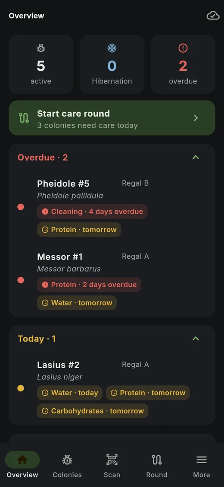
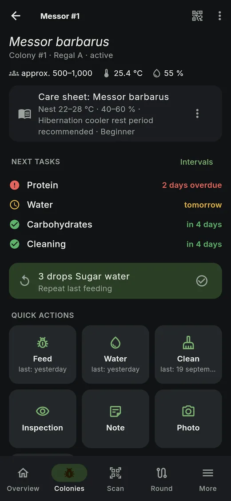
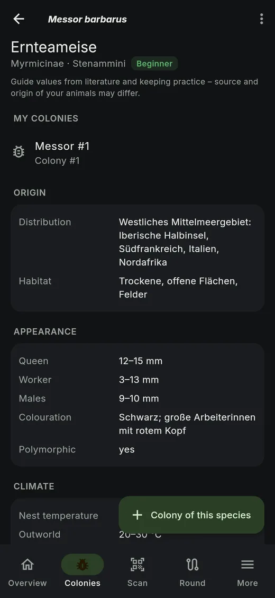
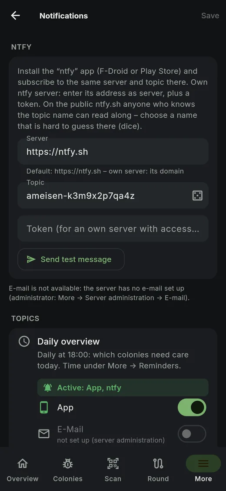
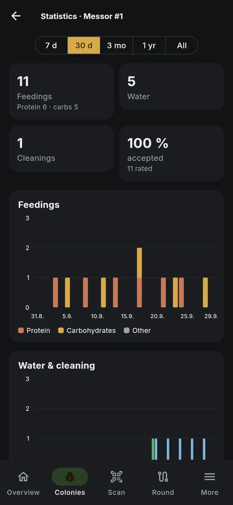
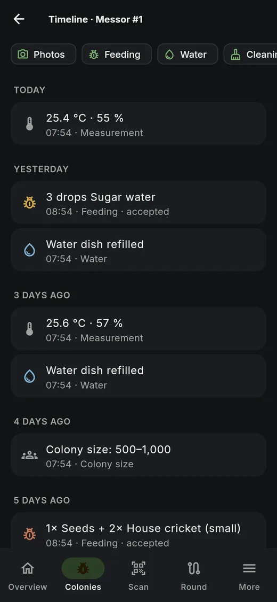
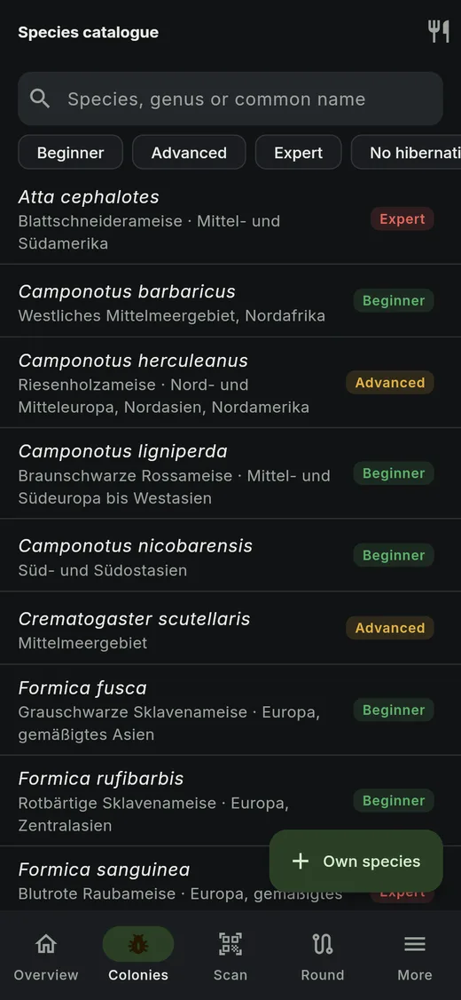
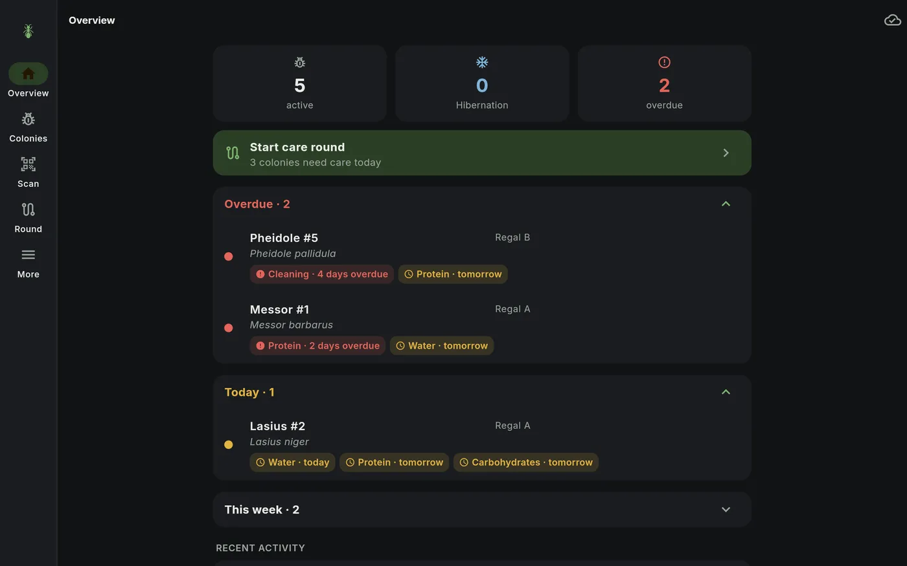

Your ant colonies.
One scan.
Hold your phone to the NFC tag or scan the QR code – the colony opens, you see what is due, and record feeding, water or cleaning with one tap. Even without internet.

Built for everyday colony care
NFC tags & QR labels
One tag or label per colony – scanning opens it right away. Labels as PDF, also as A4 sheets.
Due dates at a glance
Protein, carbohydrates, water, cleaning with their own interval. Red, yellow, green – and “Tomorrow” when there's no time today.
Care round
Scan many colonies one after another and record with 1–2 taps. At the end you see what's missing.
Offline first
Everything is saved on the device first and synced in the background – nothing gets lost in a basement without signal.
Notifications
Via the app, ntfy (your own server too) or e-mail: daily overview, overdue care, sensor alarm, hibernation.
Species catalogue
Care sheets with climate, hibernation, food and sources – linked to your colonies. Plus a feeding guide.
Sensors
ESP32 & co. send temperature and humidity straight to your server – with limits and alarms.
Statistics & report
Feedings, growth, climate and brood as charts; colony report as PDF.
Photos & timeline
Photos from camera or gallery – on the day they were taken. Add entries later, swipe to delete.
Take a look







In three steps
Start the server
One docker compose install on your home server, NAS or Raspberry Pi – ready-made template for Unraid, Synology and Portainer.
Connect the app
Install the Android app from F-Droid or just open the web app in the browser. Sign in with a QR code from the web app – no password typing.
Tag your colonies
Create a colony, print a label or assign an NFC tag – from now on one scan is enough.
Install
Requirement: Docker with Compose v2. The stack sets up database, backups and keys by itself.
# download and start
git clone https://github.com/daschmidt1994/ant-colony-manager.git
cd ant-colony-manager
./scripts/init-env.sh
docker compose up -d
# setup code for the first account
docker compose logs app | grep -A1 Setup-CodeThen open http://<server>:8080/setup. Unraid, Synology, Portainer: ready-made compose file · full guide (German)
Android app via F-Droid

- Install F-Droid (or Droid-ify / Neo Store).
- Settings → Repositories → + and scan this QR code or open the link.
- Search for “Ant Colony Manager” and install – updates arrive automatically.
Fingerprint: BBCE52863C9584F4457D932A9FC0DF7EB5872B96E1940F502C747FF57EDB8863
Without F-Droid: the APK straight from the GitHub releases.
Self-hosted, no detours
- Runs on your hardware – no account with us, no cloud
- No telemetry; only an optional update check against GitHub
- Export as JSON, CSV and photos at any time
- Daily backups as plain files, restore with a script
- Passwords and keys stored encrypted or only as a hash
- Open source under AGPL-3.0